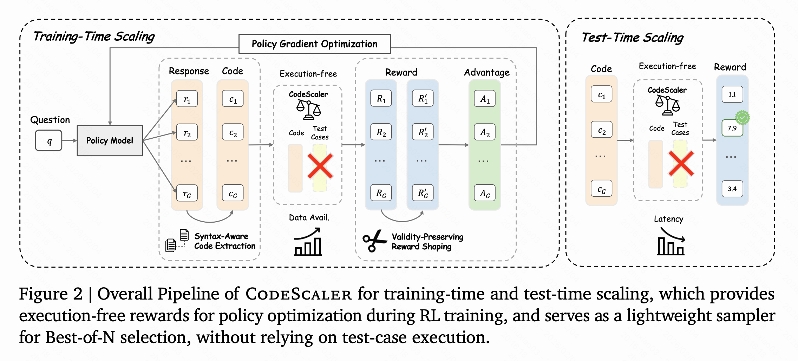
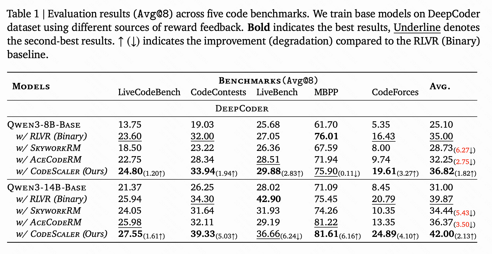
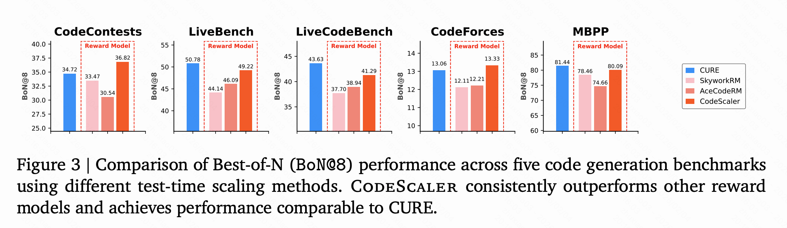
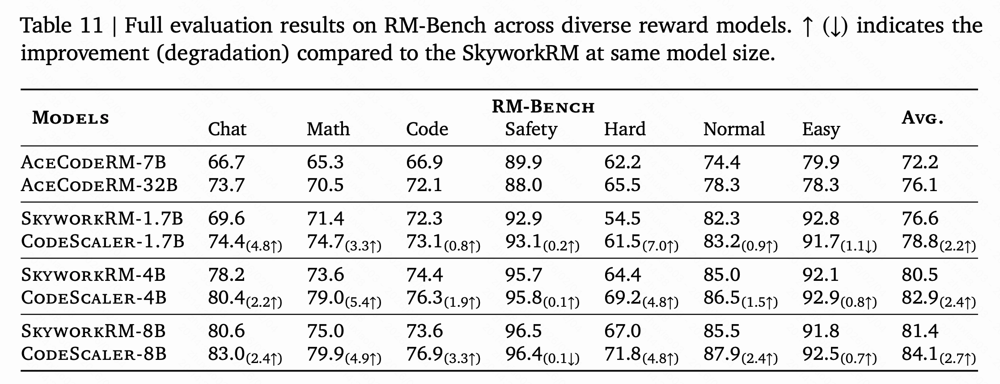

Reinforcement Learning from Verifiable Rewards (RLVR) has driven recent progress in code large language models by leveraging execution-based feedback from unit tests, but its scalability is fundamentally constrained by the availability and reliability of high-quality test cases. We propose CodeScaler, an execution-free reward model designed to scale both reinforcement learning training and test-time inference for code generation. CodeScaler is trained on carefully curated preference data derived from verified code problems and incorporates syntax-aware code extraction and validity-preserving reward shaping to ensure stable and robust optimization. Across five coding benchmarks, CodeScaler improves Qwen3-8B-Base by an average of +11.72 points, outperforming binary execution-based RL by +1.82 points, and enables scalable reinforcement learning on synthetic datasets without any test cases. At inference time, CodeScaler serves as an effective test-time scaling method, achieving performance comparable to unit test approaches while providing a 10× reduction in latency. Moreover, CodeScaler surpasses existing reward models on RM-Bench not only in the code domain (+3.3 points), but also in general and reasoning domains (+2.7 points on average).

We propose CodeScaler, an execution-free reward model designed to scale both reinforcement learning training and test-time inference for code generation. CodeScaler is trained on carefully curated preference data derived from verified code problems and incorporates syntax-aware code extraction and validity-preserving reward shaping to ensure stable and robust optimization.

We conduct reinforcement learning on Qwen3-8B-Base and Qwen3-14B-Base using the DeepCoder training set, which contains programming tasks with high-quality, verified test cases. We compare three sources of reward signals during RL: binary execution feedback and two other reward models. Our method consistently delivers the strongest gains. We attribute this to the dense and structured reward signals produced by our model. Unlike binary pass/fail feedback, our continuous scoring provides informative gradients by assigning intermediate rewards to partially correct or logically sound solutions. This enables the policy to better capture code structure, refine reasoning paths, and explore a broader solution space.

By assigning scalar rewards to generated code, our model naturally induces a ranking over candidate solutions, making it directly applicable to Best-of-N sampling and efficient test-time scaling (TTS). We compare against unit-test-based methods, represented by CURE, which synthesizes unit tests for each problem and selects the solution that passes the most tests, as well as other reward models. Our model substantially outperforms existing reward models and achieves performance comparable to CURE, while requiring 10× lower latency. This makes our method particularly attractive for real-world deployment, where both solution quality and inference efficiency are critical.

We evaluated CodeScaler on standard reward model benchmarks. Although CodeScaler was not designed as a general purpose reward model, testing it on these benchmarks still provides valuable insights. We used RM-Bench to compare CodeScaler against other reward models. Beyond the clear improvement in code tasks (73.6 → 76.9), we found a surprising result: even though CodeScaler was trained only on code, it also improved in general (Chat, 80.6 → 83.0) and reasoning domains (Math, 75.0 → 79.9). This indicates that learning to evaluate code sharpens the model’s overall judgment, even beyond the code domain.
Wait for bibtex